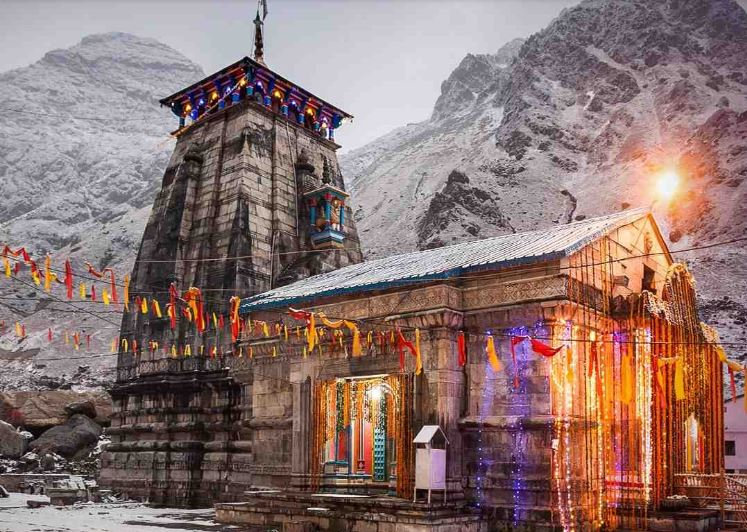
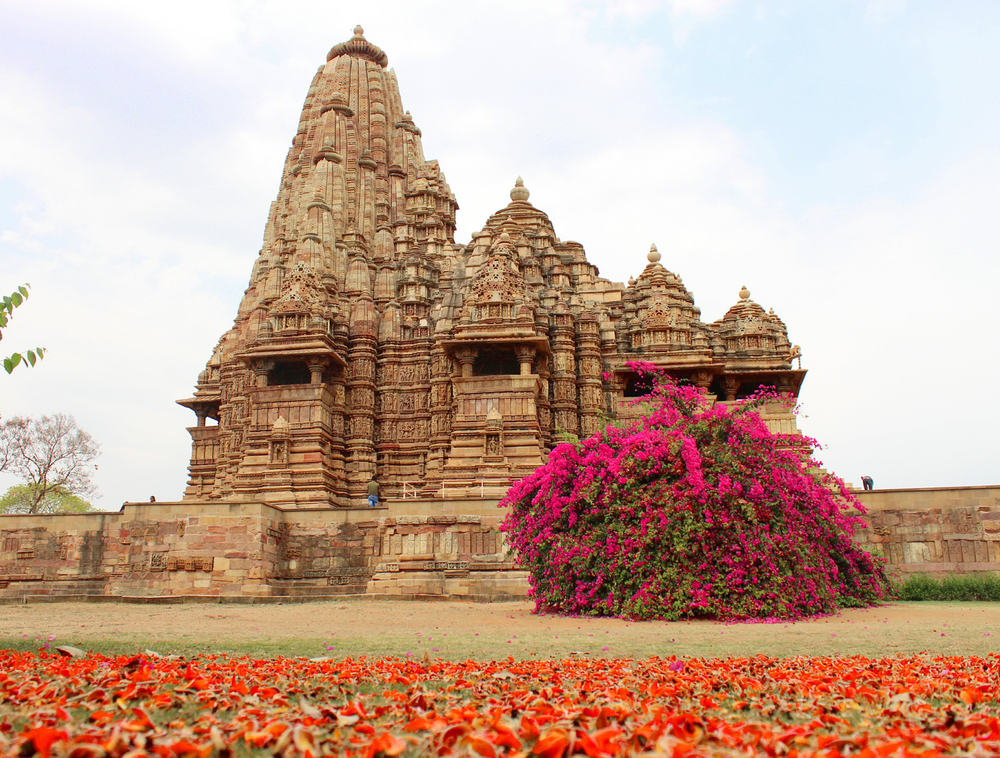
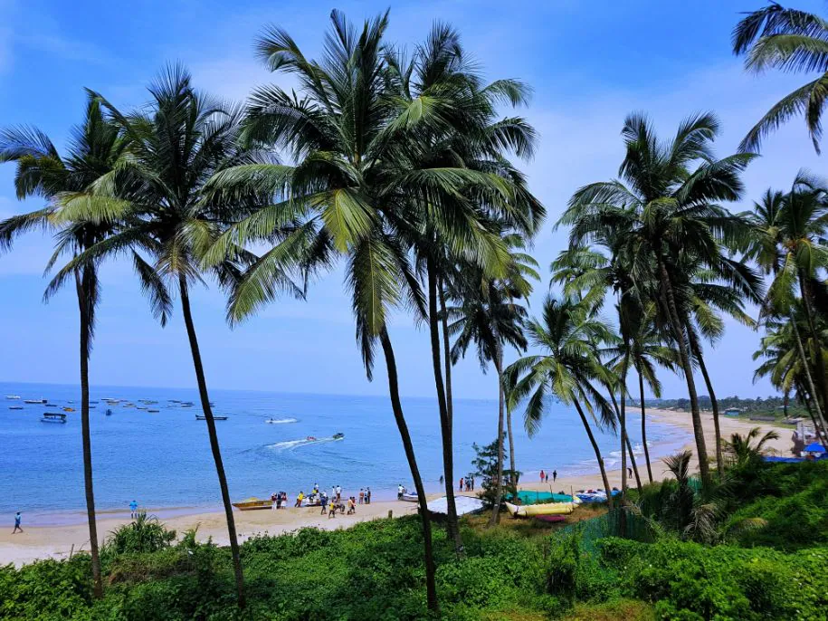

Best places to visit

Triveni Sangam is the confluence of the Ganges (Ganga), the Yamuna,
and the
mythical Saraswati River. Triveni Sangam is located at Prayag the area
of
Allahabad neighbouring the confluence; for this reason,
the confluence is also sometimes referred to as Prayag.
At Triveni Sangam, the Ganges
and the Yamuna can
identified by their different colours the water of the
Ganges is clear while that of the Yamuna is greenish in colours.

Kedarnath Temple is a Hindu temple roughly 1200 years old
dedicated to Shiva.The temple
is located on the Garhwal Himalayan
range[citation needed] near the Mandakini river,
in the
state of Uttarakhand, India. Due to extreme weather conditions,
the
temple is open to the general public only between the months of April
(Akshaya Tritiya) and November (Kartik Purnima, the autumn full moon).

The Khajuraho Group of Monuments are a group of Hindu and Jain temples in
Chhatarpur district,Madhya Pradesh, India. They are about 175 kilometers
southeast of Jhansi,10km from Azad Nagar Khajwa, 9km from Rajnagar and 49 km
from district headquarter Chhatarpur.They are a UNESCO World Heritage Site.
The temples are famous for their nagara-style
architectural symbolism and a few erotic sculptures.

The Taj Mahal is an ivory-white marble mausoleum on the right bank of the
river Yamuna in the Indian city of Agra. It was commissioned in 1631 by the
Mughal emperor Shah Jahan (r. 1628–1658) to house the tomb of his favourite wife,
Mumtaz Mahal; it also houses the tomb of Shah Jahan himself.The tomb is the
centrepiece of a 17-hectare (42-acre) complex, which includes a mosque and a guest
house, and is set in formal gardens bounded on three sides by a crenellated wall.

Goa is a state in western India with coastlines stretching along the Arabian Sea.
Its long history as a Portuguese colony prior to 1961 is evident in its
preserved 17th-century churches and the area’s tropical spice plantations.
Goa is also known for its beaches, ranging from popular stretches at Baga
and Palolem to those in laid-back fishing villages such as Agonda.